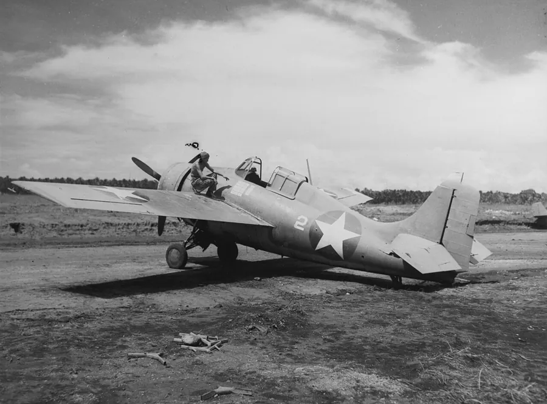
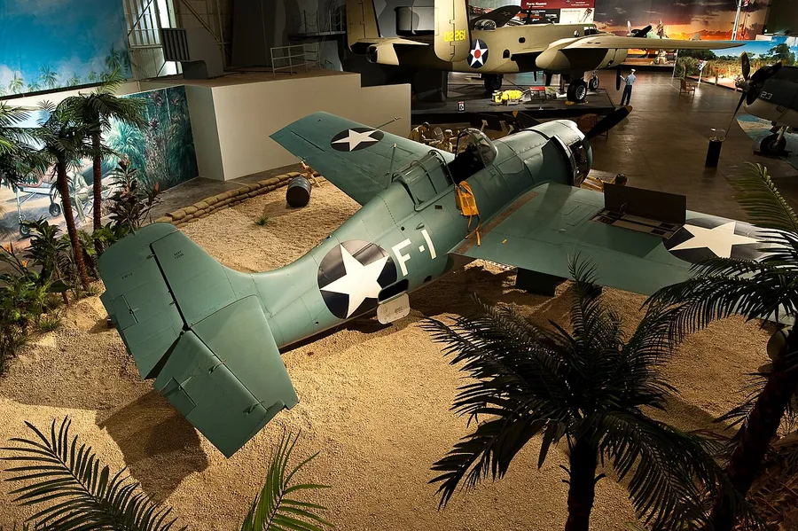

Wildcat operations · 1940–1945
The Wildcat fought from fleet carriers, escort carriers and desperate island strips. Its story covers early-war US Navy carrier battles, the Marine defence of Midway and Guadalcanal, Royal Navy Martlets, and late-war FM-2 escort-carrier operations. For modellers, the best subjects are photo-led: Thach’s VF-3 cockpit, VMF-221 Midway damage, Cactus Air Force Guadalcanal wear, and Fleet Air Arm Martlet camouflage.

Role & strengths
- Rugged US Navy and Marine carrier fighter
- Coral Sea, Midway and Guadalcanal campaign identity
- Fleet Air Arm Martlet route with British camouflage/markings
- FM-2 escort-carrier and late-war Atlantic/Pacific subjects
- Carrier deck wear, salt, coral dust and radial-engine staining
Key theatres
- US Navy carrier battles: Coral Sea and Midway
- USMC Midway and Guadalcanal defence
- Fleet Air Arm Martlet carrier operations
- Escort carriers and FM-2 late-war routes
Specification F4F-4
Survivors today

Surviving Wildcats and Martlets are useful for short fuselage proportions, landing gear geometry, wing fold, cockpit, cowling and the compact naval-fighter stance.
View survivorsTimeline highlights
Build this Wildcat as…
Choose the campaign first. Early F4F-3 carrier fighters, F4F-4 Midway/Guadalcanal aircraft, Fleet Air Arm Martlets and FM-2 escort-carrier Wildcats all have different markings and weathering.
Aircraft identity
F4F-3, F4F-4, FM-1, FM-2 and Martlet marks are not interchangeable. Check cowling, guns, wing fold and national markings.
Early-war US stars, red centres, rudder stripes, carrier codes and FAA roundels changed quickly. Pick the date before decals.
Paint scheme cards
Core Midway/early carrier finish. Add salt, deck wear and faded upper surfaces.
Cactus aircraft need dust, sun, patched paint and hard island-strip wear.
Martlet subjects need British camouflage/roundels and carrier-weathered finish.
Escort-carrier FM-2s reward salt fading, deck handling and late-war naval markings.
Campaign cards
VF-3, VF-6 and VMF-221 routes: early stars, carrier/coral wear and desperate 1942 context.
Cactus Air Force Wildcats need dust, sun fading, patchy paint and hard island-strip maintenance.
British service gives different camouflage, roundels and escort-carrier context.
FM-2 Wildcats suit Atlantic and Pacific escort-carrier builds with salt, deck wear and late markings.
Build difficulty and related guides
Medium. The Wildcat is compact, but gear, wing fold and variant detail need care.
High. Wildcat gear is distinctive and easy to make look wrong if alignment is poor.
Medium-high. Carrier salt, deck wear and coral dust need layers, not random chipping.
F4F Wildcat squadrons and units
Sortable Wildcat and Martlet unit cards covering Midway, Guadalcanal, US Navy carriers, USMC squadrons, Fleet Air Arm Martlets and FM-2 escort-carrier routes.
F4F Wildcat operating map
Airfield info
Click a marker to show linked Wildcat unit cards and modelling notes.
Campaign timeline
Survivors
Books and reference sources
F4F Wildcat build guide
F4F Wildcat videos, photos and archive material
Media replaces the old separate walkaround tab: cockpit, exhaust, undercarriage, markings, survivor references, archive imagery and video cards are grouped here.